Créditos: El contenido de este cuaderno ha sido tomado de varias fuentes, pero especialmente de scikit-learn1, sciki-learn2, Chris Fonnesbeck, Jie Wang, Offroad Robotics, Queen's University, Andreas Damianou - Brown University. El compilador se disculpa por cualquier omisión involuntaria y estaría encantado de agregar un reconocimiento.
Procesos Gaussianos con Python#
Objetivos de aprendizaje#
Al finalizar este notebook, el estudiante será capaz de:
Comprender los Procesos Gaussianos (GP) como distribuciones de probabilidad sobre funciones.
Derivar e implementar desde cero la inferencia posterior de un GP con NumPy y SciPy.
Entender el rol del kernel (función de covarianza) en la definición de la estructura espacial del GP.
Incorporar observaciones ruidosas al modelo GP y analizar el efecto del nivel de ruido en las predicciones.
Relacionar los Procesos Gaussianos con el Kriging geoestadístico como caso especial.
Requisitos previos: 14_Kriging — Kriging y variogramas; álgebra lineal (matrices de covarianza, descomposición de Cholesky); cálculo multivariado.
Los Procesos Gaussianos (GP) es una técnica de regresión no paramétrica poderosa y flexible utilizada en aprendizaje automático y estadística. Es particularmente útil cuando se trata de problemas que involucran datos continuos, donde la relación entre las variables de entrada y la salida no se conoce explícitamente o puede ser compleja. La GP es un enfoque Bayesiano que puede modelar la certeza en las predicciones, lo que la convierte en una herramienta valiosa para diversas aplicaciones.
Los GP se basan en el concepto de un proceso Gaussiano, que es una colección de variables aleatorias, cualquiera de las cuales en un número finito tiene una distribución Gaussiana conjunta. Un proceso Gaussiano se puede pensar como una distribución de funciones. A continuación se presentan algunas de sus características principales:
1. Naturaleza No Paramétrica: A diferencia de otros modelos que requieren un número fijo de parámetros, los GPs pueden adaptarse a la complejidad de los datos. Esto los hace versátiles para modelar relaciones no lineales y complejas entre las variables de entrada y salida.
2. Predicciones Probabilísticas: Los GPs no solo proporcionan un valor puntual de predicción, sino que también generan una distribución de probabilidad para dicho valor. Esto permite cuantificar la incertidumbre asociada a las predicciones, siendo una información muy valiosa en muchos escenarios.
3. Interpolación y Suavizado: Los GPs son particularmente útiles para trabajar con datos ruidosos o muestreados de forma irregular. Gracias a su capacidad de suavizar el ruido y predecir valores intermedios entre los datos observados, se convierten en una herramienta adecuada para este tipo de problemas.
4. Marginalización de Hiperparámetros: En lugar de necesitar un ajuste manual de los hiperparámetros del modelo (parámetros que controlan su comportamiento general), los GPs los marginalizan. Esto significa que integran sobre todos los valores posibles de los hiperparámetros, simplificando el proceso de ajuste del modelo.
Existen diferentes páginas web donde se describen visualmente los GP. Estas son algunas de ellas:
Distribución Gaussiana#
Una variable aleatoria \(X\) se dice que está distribuida normalmente con media \(\mu\) y varianza \(\sigma^2\) si su función de densidad de probabilidad (PDF) es:
La distribución Gaussiana o Normal de \(X\) se suele representar por \( P(x) ~ \sim\mathcal{N}(\mu, \sigma^2)\).
Vamos a crear un vector gaussiano con un número de \(m\) puntos:
import matplotlib.pyplot as plt
import numpy as np
n = 1 # n number of independent 1-D gaussian
m= 1000 # m points in 1-D gaussian
f_random = np.random.normal(size=(n, m))
X = np.linspace(0, 1, n).reshape(-1,1) # n points in the range of (0, 1)
plt.figure(figsize=(4, 4))
plt.plot(X, f_random, 'o', linewidth=1, markersize=1, markeredgewidth=2)
plt.xlabel('$X$')
plt.ylabel('$f(X)$')
plt.show()
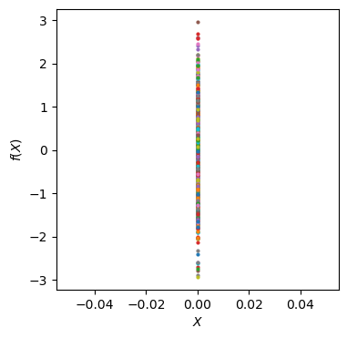
Vamos a crear ahora dos vectores gaussianos, cada uno con \(m\) puntos. Por ejemplo, colocar el vector \(X_1\) en \(X = 0\) y otro vector \(X_2\) en \(X = 1\).
n = 2 # en este caso n funciones Gaussianas
m = 1000 # cada una de m puntos
f_random = np.random.normal(size=(n, m))
X = np.linspace(0, 1, n).reshape(-1,1) # n number test points in the range of (0, 1)
plt.figure(figsize=(4, 4))
plt.plot(X, f_random, 'o', linewidth=1, markersize=1, markeredgewidth=2)
plt.xlabel(r'$X$', fontsize = 16)
plt.ylabel(r'$f(X)$', fontsize = 16)
plt.show()
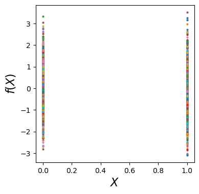
Ten en cuenta que tanto el vector \(X_1\) como el vector \(X_2\) son Gaussianos.

Ahora creamos funciones lineales que conecten estos puntos. En este caso solo mostraremos 10 puntos y sus funciones lineales.
n = 2
m = 10
f_random = np.random.normal(size=(n, m))
Xshow = np.linspace(0, 1, n).reshape(-1,1)
plt.figure(figsize=(4, 4))
plt.plot(Xshow, f_random, '-o', linewidth=2, markersize=4, markeredgewidth=2)
plt.xlabel(r'$X$', fontsize = 16)
plt.ylabel(r'$f(X)$', fontsize = 16);
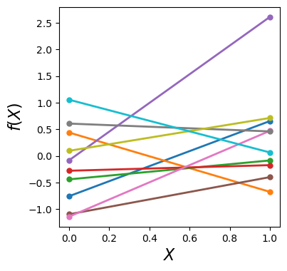
Estas líneas se parecen a funciones para cada par de puntos. Por otro lado, la gráfica también parece como si estuviéramos muestreando la región \([0, 1]\) con 10 funciones lineales, aunque solo haya dos puntos en cada línea. Desde la perspectiva del muestreo, el dominio \([0, 1]\) es nuestra región de interés, es decir, la región específica en la que realizamos nuestra regresión.
Podemos ahora generar más variables Gaussianas independientes y conectamos los puntos en orden mediante líneas. Cada función lineal es una observación evaluada en cada variable.
n = 20
m = 10
f_random = np.random.normal(size=(n, m))
Xshow = np.linspace(0, 1, n).reshape(-1,1) # n number test points in the range of (0, 1)
plt.figure(figsize=(8, 4))
plt.plot(Xshow, f_random, '-o', linewidth=1, markersize=3, markeredgewidth=2)
plt.xlabel(r'$X$', fontsize = 16)
plt.ylabel(r'$f(X)$', fontsize = 16)
plt.show()
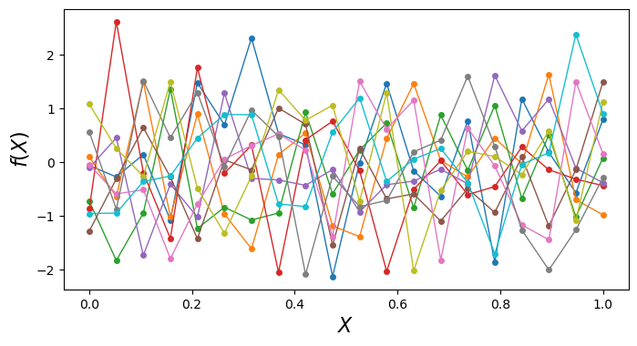
¿Qué estamos intentando hacer al conectar puntos de variables Gaussianas independientes generados aleatoriamente?
Cada línea que ven es una función generada al azar. El problema es que, como cada punto es una variable Gaussiana independiente, el valor en un punto \(X\) no tiene ninguna relación con el valor en el punto de al lado. Por eso las funciones se ven tan erráticas y ruidosas. No tienen estructura ni suavidad.
Un GP útil no solo dice que cada punto viene de una distribución Gaussiana, sino que define cómo se correlacionan esos puntos entre sí. Es esa correlación la que introduce la ‘suavidad’ y nos permite conectar los puntos de una manera que se parece a un fenómeno físico real, permitiéndonos interpolar y hacer predicciones con sentido.
Por lo tanto, las funciones obtenidas al conectar Gaussianas independientes no son adecuadas para la regresión; necesitamos Gaussianas que estén correlacionadas entre sí. ¿Cómo describimos una distribución Gaussiana conjunta? Mediante una Gaussiana multivariable.
Distribución conjunta#
En algunas situaciones, un sistema (conjunto de datos) debe describirse mediante más de una variable característica \([x_1, x_2, \ldots, x_n]\), y estas variables están correlacionadas entre sí. Si queremos modelar los datos como una Gaussiana de una sola vez, necesitamos una Gaussiana multivariada. Aquí hay ejemplos de la Gaussiana en 2D.
La Gaussiana en 2D se puede visualizar como una curva en forma de campana tridimensional, donde las alturas representan la densidad de probabilidad. La función \(P(x_1, x_2)\) es la distribución conjunta de probabilidad.

|

|
Formalmente, la Gaussiana multivariada se expresa como:
Donde \(\Sigma^{-1}\) es la matriz de covarianza y \(d\) es el número de vectores o dimensiones. Para el caso 2D, el vector de medias \(\mu\) es un vector \((\mu_1, \mu_2)\), que son las medias independientes de cada variable \(x_1\) y \(x_2\), por lo que \((\vec{x} - \vec{\mu})\) es igual a:
Y \((\vec{x} - \vec{\mu})^T\) es igual a:
Por lo tanto:
La matriz de covarianza de la Gaussiana en 2D es:
Los términos diagonales de la matriz de covarianza son las varianzas independientes de cada variable, \(x_1\) y \(x_2\). Los términos fuera de la diagonal representan las correlaciones entre las dos variables. Un componente de correlación indica cuánto está relacionada una variable con otra.
Una Gaussiana en 2D se puede expresar como:
Cuando tenemos una Gaussiana en \(N\) dimensiones, la matriz de covarianza \(\Sigma\) es de \(N×N\) y su elemento \((i,j)\) es \(\Sigma_{ij}=cov(y_i,y_j)\). La matriz \(\Sigma\) es simétrica y almacena las covarianzas por pares de todas las variables aleatorias modeladas conjuntamente.
Distribución marginal#
La distribución marginal responde a la pregunta: “Si tengo un modelo conjunto de varias variables, ¿cuál es la distribución de una sola de ellas, ignorando por completo la información de las demás?”. La distribución marginal de una variable es simplemente la sombra que esa distribución conjunta proyecta sobre el eje de otra variable. Matemáticamente, para obtener la distribución marginal de una variable (por ejemplo, \(x_1\)), “sumamos” (integramos) las probabilidades sobre todos los valores posibles de la otra variable (\(x_2\)).
La propiedad fundamental de la distribución Gaussiana multivariada es que sus distribuciones marginales son también Gaussianas.
Si partimos de una distribución conjunta para el vector \(\vec{x}=\begin{pmatrix}x_1,x_2\end{pmatrix}\) con los siguientes parámetros:
Para encontrar la distribución marginal de \(X_1\), \(p(x_1)\), integramos la distribución conjunta sobre todos los valores de \(x_2\):
El resultado de esta integral es una nueva distribución Gaussiana 1D con \(\mu_1\) y \(\sigma^2_1\). Simplemente tomamos los valores correspondientes a \(x_1\) del vector de medias y de la diagonal de la matriz de covarianza. La ecuación para la distribución marginal de \(X_1\) es:
Distribución condicionada#
La distribución condicional responde a la pregunta: “Sabiendo que una de las variables ha tomado un valor específico, ¿cuál es la nueva distribución de la otra variable?”. Esta es la idea de actualizar nuestra creencia a la luz de nueva evidencia. Ya no estamos viendo la sombra (marginal), sino que estamos tomando un corte transversal o una rebanada de la distribución conjunta en el valor que conocemos.
La propiedad fundamental es, una vez más, que la distribución condicional de una Gaussiana multivariada es también siempre una Gaussiana. Sin embargo, a diferencia de la marginal, sus parámetros (media y varianza) cambian de una manera muy interesante.
Partimos de la misma distribución conjunta para \(\vec{x}=\begin{pmatrix}x_1,x_2\end{pmatrix}\) con su vector de medias \(\vec\mu\) y su matriz de covarianza \(\Sigma\). Supongamos que observamos que la variable \(X_2\) tiene un valor específico, digamos \(x_2=a\). Queremos encontrar la nueva distribución para \(X_1\), que escribimos como \(p(x_1∣x_2=a)\). Esta nueva distribución será una Gaussiana 1D, por lo que necesitamos encontrar su nueva media, \(\mu_1∣2\), y su nueva varianza, \(\sigma^2 _1∣2\).
La Nueva Media Condicional \((\mu_1∣2)\): La media original de \(x_1 (\mu_1)\) se ajusta en función de la información que nos da \(x_2=a\). El ajuste depende de qué tan lejos está a de su propia media \((\mu_2)\) y de qué tan fuerte es la correlación.
La Nueva Varianza Condicional \((\sigma^2 _1∣2)\): La varianza original de \(x_1 (\sigma^2_1)\) se reduce. Como ahora tenemos información, nuestra incertidumbre sobre \(x_1\) disminuye. La cantidad de reducción depende de la fuerza de la correlación.
Esta expresión es equivalente a \(\sigma_1^2 (1−\rho^2)\), lo que muestra claramente que si la correlación \(\rho\) es alta, la varianza se reduce mucho. Con estos nuevos parámetros, la ecuación para la distribución condicional \(p(x_1∣x_2=a)\) es:
Ejemplo#
Sea $\( \mathbf{Z}=\begin{bmatrix}X\\Y\end{bmatrix}\sim \mathcal N_2\Bigl(\begin{bmatrix}1\\2\end{bmatrix},\begin{bmatrix}4 & 2\\2 & 3\end{bmatrix}\Bigr). \)$
Conjunta $\( f_{X,Y}(x,y)=\frac{1}{2\pi\sqrt{\det\boldsymbol\Sigma}}\exp\Bigl\{-\tfrac12[(x-1,\,y-2)\boldsymbol\Sigma^{-1}(x-1,\,y-2)^\top]\Bigr\}. \)$
Marginales $\( X\sim\mathcal N(1,4),\qquad Y\sim\mathcal N(2,3). \)$
Condicional de \((Y\mid X=x)\) $\( Y\mid X=x\;\sim\;\mathcal N\bigl(2+\frac{2}{4}(x-1),\,3-\frac{2^2}{4}\bigr). \)$
Si \((X=5\)), entonces \((Y\mid X=5\sim\mathcal N(4,2))\).
Matriz de convarianza (Kernel)#
Luego de revisar estos conceptos de la distribución Gaussiana multivariada, retomemos. Volvamos a trazar 20 Gaussianas independientes conectando los puntos en orden mediante líneas. Pero en lugar de generar 20 Gaussianas independientes como antes, realizamos el gráfico de 20 Gaussianas con una matriz de covarianza identidad (media = 0, varianza = 1 y covarianza = 0), esto significa que son también independientes. El cambio está en que en lugar de generar 20 vectores independientes, estamos generando 20 vectores Gaussianos unitarios, es decir media = 0 y varianza = 1.
n = 20
m = 10
mean = np.zeros(n)
cov = np.eye(n)
f_prior = np.random.multivariate_normal(mean, cov, m).T
plt.figure(figsize=(8, 4))
X = np.linspace(0, 1, n).reshape(-1,1)
for i in range(m):
plt.plot(X, f_prior, '-o', linewidth=1)
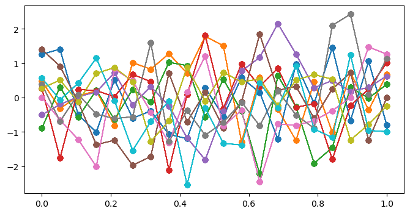
Obtuvimos exactamente el mismo gráfico como se esperaba. Ahora, kernelicemos nuestras funciones utilizando la RBF como nuestra covarianza. Si usas una matriz de covarianza con ceros fuera de la diagonal (covarianza cero), obtienes funciones “ruidosas” y sin estructura, porque cada punto es independiente del resto.
Para suavizar y correlacionar las funciones de muestreo utilizamos la matriz de covarianza. Considerando el hecho de que cuando dos vectores son similares, el valor de salida de su producto punto es alto. Si son perpendiculares, es cero.
En nuestro caso, no nos interesa tanto el “espacio de características”. Lo que nos interesa es la idea de reemplazar una operación simple (el producto punto) por una función de similitud más general y potente, a la que llamamos función núcleo o kernel, denotada como \(k(x_i,x_j)\). Un kernel es simplemente una función que toma dos puntos, \(x_i\) y \(x_j\), y devuelve un número que representa su covarianza. Una función de covarianza popular (también conocida como función núcleo) es el kernel exponencial cuadrado, también llamado kernel de función de base radial (RBF) o kernel gaussiano, definido como:
El término \((x_i−x_j)\) es la distancia euclidiana al cuadrado entre los dos puntos. Es una medida de cuán diferentes o lejanos son. La función exponencial de un número negativo, exp(−z), tiene una propiedad clave: Si z es pequeño (los puntos están cerca), exp(−z) es cercano a 1. Si z es grande (los puntos están lejos), exp(−z) es cercano a 0. Por lo tanto, si \(x_i\) y \(x_j\) son muy cercanos: La distancia \((x_i−x_j)\) es casi 0. La covarianza será \(exp(0)=1\). ¡Máxima correlación!. Si \(x_i\) y \(x_j\) están muy lejos: La distancia es grande. La covarianza será un número grande, que es casi 0. ¡Independencia!
import scipy as sp
import pandas as pd
import matplotlib.cm as cm
# Define the exponentiated quadratic
def exponentiated_quadratic(xa, xb):
"""Exponentiated quadratic with σ=1"""
# L2 distance (Squared Euclidian)
sq_norm = -0.5 * sp.spatial.distance.cdist(xa, xb, 'sqeuclidean')
return np.exp(sq_norm)
# Illustrate covariance matrix and function
# Show covariance matrix example from exponentiated quadratic
fig, (ax1, ax2) = plt.subplots(1, 2, figsize=(7, 3))
xlim = (-3, 3)
X = np.expand_dims(np.linspace(*xlim, 25), 1)
Σ = exponentiated_quadratic(X, X)
# Plot covariance matrix
im = ax1.imshow(Σ, cmap=cm.YlGnBu)
cbar = plt.colorbar(
im, ax=ax1, fraction=0.045, pad=0.05)
cbar.ax.set_ylabel('$k(x,x)$', fontsize=10)
ax1.set_title(('Exponentiated quadratic \n' 'example of covariance matrix'))
ax1.set_xlabel('x', fontsize=13)
ax1.set_ylabel('x', fontsize=13)
ticks = list(range(xlim[0], xlim[1]+1))
ax1.set_xticks(np.linspace(0, len(X)-1, len(ticks)))
ax1.set_yticks(np.linspace(0, len(X)-1, len(ticks)))
ax1.set_xticklabels(ticks)
ax1.set_yticklabels(ticks)
ax1.grid(False)
# Show covariance with X=0
xlim = (-4, 4)
X = np.expand_dims(np.linspace(*xlim, num=50), 1)
zero = np.array([[0]])
Σ0 = exponentiated_quadratic(X, zero)
ax2.plot(X[:,0], Σ0[:,0], label='$k(x,0)$')
ax2.set_xlabel('x', fontsize=13)
ax2.set_ylabel('covariance', fontsize=13)
ax2.set_title(('Exponentiated quadratic covariance\n' 'between $x$ and $0$'))
# ax2.set_ylim([0, 1.1])
ax2.set_xlim(*xlim)
ax2.legend(loc=1)
fig.tight_layout()
plt.show()
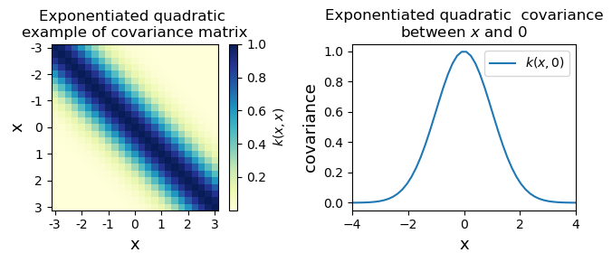
# Define the kernel RBF
def kernel(a, b):
sqdist = np.sum(a**2,axis=1).reshape(-1,1) + np.sum(b**2,1) - 2*np.dot(a, b.T)
# np.sum( ,axis=1) means adding all elements columnly; .reshap(-1, 1) add one dimension to make (n,) become (n,1)
return np.exp(-.5 * sqdist)
n = 20
m = 10
X = np.linspace(0, 1, n).reshape(-1,1)
K_ = kernel(X, X) # k(x_star, x_star)
mean = np.zeros(n)
cov = np.eye(n)
f_prior = np.random.multivariate_normal(mean, K_, m).T
plt.figure(figsize=(8, 4))
Xshow = np.linspace(0, 1, n).reshape(-1,1) # n number test points in the range of (0, 1)
for i in range(m):
plt.plot(Xshow, f_prior, '-o', linewidth=1)
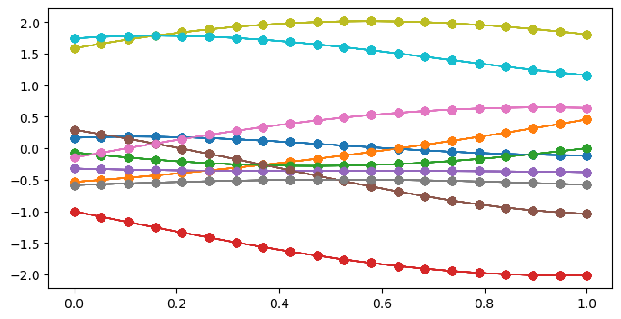
Obtenemos líneas mucho más suaves que se asemejan más a funciones. Cuando la dimensión de la Gaussiana aumenta, ya no es necesario conectar puntos. Cuando la dimensión se vuelve infinita, hay un punto que representa cualquier entrada posible. Vamos a graficar m=200 muestras de una Gaussiana de n=200-D para tener una idea de cómo se ven las funciones con infinitos parámetros.
n = 200
m = 200
X = np.linspace(0, 1, n).reshape(-1,1)
K_ = kernel(X, X) # k(x_star, x_star)
mean = np.zeros(n)
cov = np.eye(n)
f_prior = np.random.multivariate_normal(mean, K_, m).T
plt.figure(figsize=(16,8))
for i in range(m):
plt.plot(X, f_prior, 'o', linewidth=1, markersize=2, markeredgewidth=1)
plt.title('200 samples of the 200-D gaussian kernelized prior');
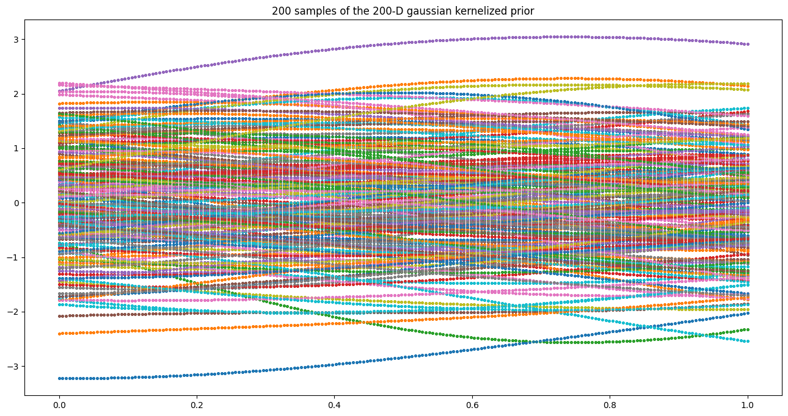
Descomposición de Cholesky#
La descomposición de Cholesky es un algoritmo que toma tu matriz de kernel \(K\) (tu “mapa de correlaciones”) y la descompone en el producto de una matriz \(L\) y su transpuesta \(L^T\), donde \(L L^T = K\). Es, conceptualmente, la raíz cuadrada de una matriz. Se hace para encontrar la matriz transformadora L. Esta matriz L es la “receta” o el “plano topográfico” que nos dice exactamente cómo a partir de datos aleatorios e independientes (z) para canalizarla y formar una matriz que tenga la estructura y las correlaciones que definimos en nuestro kernel. En resumen, la descomposición de Cholesky es el puente computacional que nos permite pasar de un ruido simple y sin estructura a una función suave y correlacionada que se parece a un fenómeno físico real.
n = 20
m = 10
X = np.linspace(0, 1, n).reshape(-1,1)
K_ = kernel(X, X)
L = np.linalg.cholesky(K_ + 1e-6*np.eye(n))
f_prior = np.dot(L, np.random.normal(size=(n,m)))
plt.figure(figsize=(8,4))
plt.plot(X, f_prior, '-o')
plt.title('10 samples of the 20-D gaussian kernelized prior');
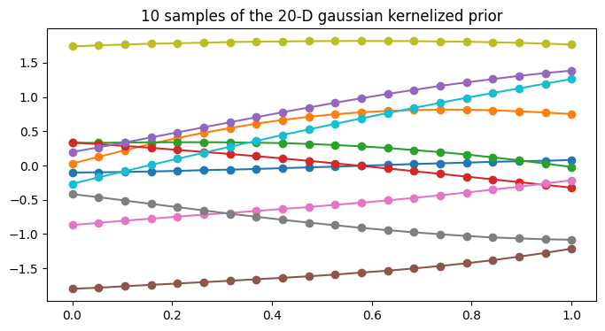
Entonces, tenemos observaciones, y hemos estimado funciones \(\mathbf{f}\) con estas observaciones. Ahora digamos que tenemos algunos puntos nuevos \(\mathbf{X}_*\) donde queremos predecir \(f(\mathbf{X}_*)\).

La distribución conjunta de \(\mathbf{f}\) y \(\mathbf{f}_*\) se puede modelar como:
donde \(\mathbf{K}=\kappa(\mathbf{X}, \mathbf{X})\), \(\mathbf{K}_* = \kappa(\mathbf{X}, \mathbf{X}_*)\) y \(\mathbf{K}_{**}=\kappa(\mathbf{X}_*, \mathbf{X}_*)\). Y \(\begin{pmatrix}m(\mathbf{X})\\ m(\mathbf{X}_*)\end{pmatrix} = \mathbf{0}\)
Esto modela una distribución conjunta \(p(\mathbf{f}, \mathbf{f}_* \, \vert \, \mathbf{X}, \mathbf{X}_*)\), pero queremos la distribución condicional sobre \(\mathbf{f}_*\) solamente, que es \(p(\mathbf{f}_* \, \vert \, \mathbf{f}, \mathbf{X}, \mathbf{X}_*)\). El proceso de derivación de la distribución conjunta \(p(\mathbf{f}, \mathbf{f}_* \, \vert \, \mathbf{X}, \mathbf{X}_*)\) a la condicional \(p(\mathbf{f}_* \, \vert \, \mathbf{f}, \mathbf{X}, \mathbf{X}_*)\) usa la distribución marginal y condicional, y obtenemos la ecuación:
Estas corresponden a las mismas ecuaciones descritas anteriormente. La nueva media de \(x_1\) dado que observamos \(x_2=a\).
Si asumimos que las medias \(\mu_1\) y \(\mu_2\) son cero, la ecuación se simplifica a:
La media de las predicciones \(\mathbf{f}_*\) dado que observamos los datos \(\mathbf{f}\).
\(\mathbf{K}_*^T\) es el análogo de la covarianza \(\sigma_{12}\) (o más bien \(\sigma_{21}\), que es lo mismo). \(\mathbf{K}^{−1}\) (multiplicar por la inversa) es el análogo de dividir entre la varianza \(\frac{1}{\sigma_2^2}\). \(\mathbf{f}\) es el análogo del valor observado \(a\).
La nueva varianza de \(x_1\)(nuestra incertidumbre reducida).
Podemos reescribir el segundo término como \(\frac{\sigma_{12}}{\sigma_{21}\sigma_{22}}\) ya que \(\sigma_{12}=\sigma_{21}.\)
La nueva matriz de covarianza para las predicciones \(\mathbf{f}_*\).
donde \(\mathbf{K}_{**}\) es el análogo de la varianza original \(\sigma_1^2\). Y por el otro lado, \(\mathbf{K}_*^T \mathbf{K}^{-1} \mathbf{K}_*\) es el análogo matricial de \(\frac{\sigma_{21}}{\sigma_{12}\sigma_{22}}\). Es el término que representa la reducción de la incertidumbre gracias a las observaciones.
Es realista modelar situaciones en las que no tenemos acceso a los valores de la función en sí, sino solo versiones ruidosas de ellos \(y = f(x) + \epsilon\). Suponiendo ruido aditivo independiente e idénticamente distribuido con varianza \(\sigma_n^2\), la a priori sobre las observaciones ruidosas se convierte en \(cov(y) = \mathbf{K} + \sigma_n^2\mathbf{I}\). La distribución conjunta de los valores objetivos observados y los valores de la función en las ubicaciones de prueba bajo la a priori es
Derivando la distribución condicional correspondiente a la ecuación 2.19 obtenemos las ecuaciones predictivas para la regresión de procesos Gaussianos como
donde, $\(\mathbf{\bar{f}_*} \overset{\Delta}{=} \mathbb{E} [\mathbf{\bar{f}_*} \, \vert \, \mathbf{X}, \mathbf{y}, \mathbf{X}_*] = \mathbf{K}_*^T [\mathbf{K} + \sigma_y^2\mathbf{I}]^{-1} \mathbf{y} \)$
Ejemplo GP con 1 variable y sin ruido#
Primeros definimos una función que nos estima el valor medio y la covarianza en un GP ingresando como datos una covariable \(X1\) con sus correspondientes \(y1\), y datos nuevos para predecir de la covariable denominado \(X2\), y una función kernel definida por el ususario.
# Gaussian process posterior
from scipy import linalg
def GP(X1, y1, X2, kernel_func):
"""
Calculate the posterior mean and covariance matrix for y2
based on the corresponding input X2, the observations (y1, X1),
and the prior kernel function.
"""
# Kernel of the observations
Σ11 = kernel_func(X1, X1)
# Kernel of observations vs to-predict
Σ12 = kernel_func(X1, X2)
# Solve
solved = sp.linalg.solve(Σ11, Σ12, assume_a='pos').T
# Compute posterior mean
μ2 = solved @ y1
# Compute the posterior covariance
Σ22 = kernel_func(X2, X2)
Σ2 = Σ22 - (solved @ Σ12)
return μ2, Σ2 # mean, covariance
Con esta función construida, vamos a generar unos datos sintéticos a partir de una función verdadera, en este caso Sen(x), la cual siempre se desconoce, en este caso la estamos creando para poder generar los datos observados para el ejemplo. En la vida real, esta función se desconoce y lo que tenemos son solo los datos observados.
# Compute the posterior mean and covariance
# Define the true function that we want to regress on
f_sin = lambda x: (np.sin(x)).flatten()
n1 = 8 # Number of points to condition on (training points)
n2 = 75 # Number of points in posterior (test points)
ny = 5 # Number of functions that will be sampled from the posterior
domain = (-6, 6)
# Sample observations (X1, y1) on the function
X1 = np.random.uniform(domain[0]+2, domain[1]-2, size=(n1, 1))
y1 = f_sin(X1)
# Predict points at uniform spacing to capture function
X2 = np.linspace(domain[0], domain[1], n2).reshape(-1, 1)
Ya generamos entonces X1, y1 y los valores a predecir X2. Con estos datos podemos entonces implementar la función que creamos al inicio y que permite implementar GP. Como kernel utilizaremos la función que creamos anteriormente denominada exponentiated_quadratic.
# Compute posterior mean and covariance
μ2, Σ2 = GP(X1, y1, X2, exponentiated_quadratic)
# Compute the standard deviation at the test points to be plotted
σ2 = np.sqrt(np.diag(Σ2))
Ahora, vamos a graficar la función real Sen(x) con el valor medio que se obtuvo con el GP un intervalor de dos desviaciones estandar, que se obtiene de los resultados del GP, y graficaremos los puntos observados \(x1\) y \(y1\).
# Plot the postior distribution and some samples
fig, ax = plt.subplots(figsize=(6, 6))
# Plot the distribution of the function (mean, covariance)
ax.plot(X2, f_sin(X2), 'b--', label='$sin(x)$')
ax.fill_between(X2.flat, μ2-2*σ2, μ2+2*σ2, color='red', alpha=0.15, label='$2 \sigma_{2|1}$')
ax.plot(X2, μ2, 'r-', lw=2, label='$\mu_{2|1}$')
ax.plot(X1, y1, 'ko', linewidth=2, label='$(x_1, y_1)$')
ax.set_xlabel('$x$', fontsize=13)
ax.set_ylabel('$y$', fontsize=13)
ax.set_title('Distribution of posterior and prior data.')
ax.axis([domain[0], domain[1], -3, 3])
ax.legend();
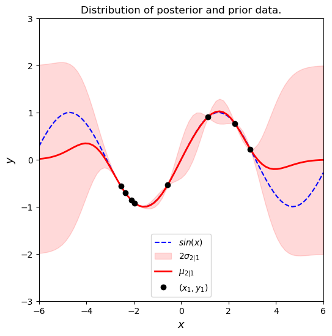
# Draw some samples of the posterior
y2 = np.random.multivariate_normal(mean=μ2, cov=Σ2, size=ny)
# Plot the postior distribution and some samples
fig, ax = plt.subplots(figsize=(6, 6))
# Plot some samples from this function
ax.plot(X2, y2.T, '-')
ax.set_xlabel('$x$', fontsize=13)
ax.set_ylabel('$y$', fontsize=13)
ax.set_title('5 different function realizations from posterior')
ax.axis([domain[0], domain[1], -3, 3])
ax.set_xlim([-6, 6])
plt.tight_layout()
plt.show()
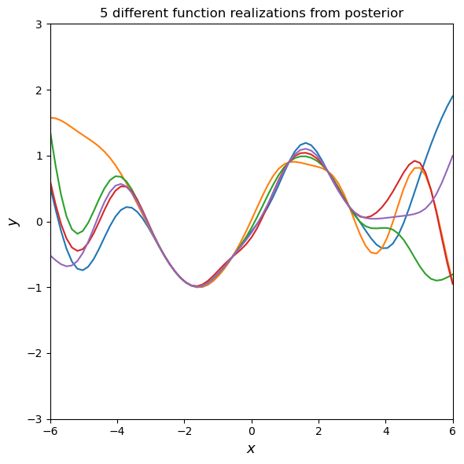
Ejemplo GP con 1 variable y con datos con ruido#
De forma similar vamos a generar un ejemplo con datos sintéticos, pero en este caso incluiremos ruido propio de los datos.
# Gaussian process posterior with noisy obeservations
def GP_noise(X1, y1, X2, kernel_func, σ_noise):
"""
Calculate the posterior mean and covariance matrix for y2
based on the corresponding input X2, the noisy observations
(y1, X1), and the prior kernel function.
"""
# Kernel of the noisy observations
Σ11 = kernel_func(X1, X1) + ((σ_noise ** 2) * np.eye(n1))
# Kernel of observations vs to-predict
Σ12 = kernel_func(X1, X2)
# Solve
solved = sp.linalg.solve(Σ11, Σ12, assume_a='pos').T
# Compute posterior mean
μ2 = solved @ y1
# Compute the posterior covariance
Σ22 = kernel_func(X2, X2)
Σ2 = Σ22 - (solved @ Σ12)
return μ2, Σ2 # mean, covariance
σ_noise = 1. # The standard deviation of the noise
# Add noise kernel to the samples we sampled previously
y1 = y1 + ((σ_noise ** 2) * np.random.randn(n1))
# Compute the posterior mean and covariance
μ2, Σ2 = GP_noise(X1, y1, X2, exponentiated_quadratic, σ_noise)
# Compute the standard deviation at the test points to be plotted
σ2 = np.sqrt(np.diag(Σ2))
# Plot the postior distribution and some samples
fig, ax = plt.subplots(figsize=(6, 6))
# Plot the distribution of the function (mean, covariance)
ax.plot(X2, f_sin(X2), 'b--', label='$sin(x)$')
ax.fill_between(X2.flat, μ2-2*σ2, μ2+2*σ2, color='red',
alpha=0.15, label='$2\sigma_{2|1}$')
ax.plot(X2, μ2, 'r-', lw=2, label='$\mu_{2|1}$')
ax.plot(X1, y1, 'ko', linewidth=2, label='$(x_1, y_1)$')
ax.set_xlabel('$x$', fontsize=13)
ax.set_ylabel('$y$', fontsize=13)
ax.set_title('Distribution of posterior and prior data')
ax.axis([domain[0], domain[1], -3, 3])
ax.legend();
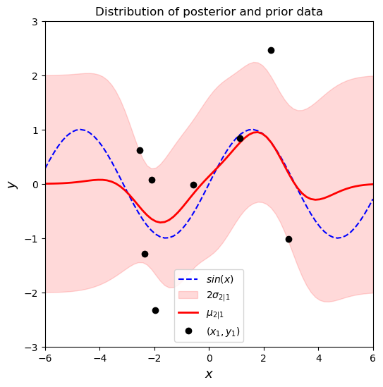
# Draw some samples of the posterior
y2 = np.random.multivariate_normal(mean=μ2, cov=Σ2, size=ny)
#Plot some samples from this function
fig, ax = plt.subplots(figsize=(6, 6))
ax.plot(X2, y2.T, '-')
ax.set_xlabel('$x$', fontsize=13)
ax.set_ylabel('$y$', fontsize=13)
ax.set_title('5 different function realizations from posterior')
ax.axis([domain[0], domain[1], -3, 3])
ax.set_xlim([-6, 6])
plt.tight_layout()
plt.show()
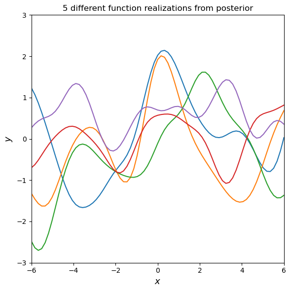
Librerías#
Hay varios paquetes o marcos disponibles para realizar Regresión de Procesos Gaussianos (GPR).
Uno ligero es sklearn.gaussian_process, cuya implementación simple, se puede realizar rápidamente.
Uno de los marcos de GP más conocidos es GPy. GPy se ha desarrollado de manera bastante madura con explicaciones bien documentadas. GPy utiliza NumPy para realizar todos sus cálculos. Para tareas que no requieren cálculos intensivos y algoritmos muy actualizados, GPy es suficiente y más estable.
Para tareas de GPR que requieren mayores cálculos, la aceleración por GPU es especialmente preferida. GPflow se origina en GPy, y gran parte de la interfaz es similar. GPflow aprovecha TensorFlow como su backend computacional. Más diferencias técnicas entre los marcos GPy y GPflow se pueden encontrar aquí.
GPyTorch es otro marco que proporciona aceleración por GPU a través de PyTorch. Contiene algoritmos de GP muy actualizados. Al igual que GPflow, GPyTorch proporciona gradientes automáticos. Por lo tanto, modelos complejos, como incrustar redes neuronales profundas en modelos GP, pueden desarrollarse más fácilmente.
Prior & Posterior con diferentes Kernel#
from sklearn.gaussian_process import GaussianProcessRegressor
from sklearn.gaussian_process import kernels
np.random.seed(0)
n=50
kernel_ =[kernels.RBF (), kernels.RationalQuadratic(), kernels.ExpSineSquared(periodicity=10.0),kernels.DotProduct(sigma_0=1.0)**2,kernels.Matern()]
print(kernel_, '\n')
for kernel in kernel_:
# Gaussian process
gp = GaussianProcessRegressor(kernel=kernel)
# Prior
x_test = np.linspace(-5, 5, n).reshape(-1, 1)
mu_prior, sd_prior = gp.predict(x_test, return_std=True)
samples_prior = gp.sample_y(x_test, 3)
# plot
plt.figure(figsize=(10, 3))
plt.subplot(1, 2, 1)
plt.plot(x_test, mu_prior)
plt.fill_between(x_test.ravel(), mu_prior - sd_prior,mu_prior + sd_prior, color='aliceblue')
plt.plot(x_test, samples_prior, '--')
plt.title('Prior')
# Fit
x_train = np.array([-4, -3, -2, -1, 1]).reshape(-1, 1)
y_train = np.sin(x_train)
gp.fit(x_train, y_train)
#posterior
mu_post, sd_post = gp.predict(x_test, return_std=True)
mu_post = mu_post.reshape(-1)
samples_post = np.squeeze(gp.sample_y(x_test, 3))
# plot
plt.subplot(1, 2, 2)
plt.plot(x_test, mu_post)
plt.fill_between(x_test.ravel(), mu_post - sd_post,mu_post + sd_post, color='aliceblue')
plt.plot(x_test, samples_post, '--')
plt.scatter(x_train, y_train, c='blue', s=50)
plt.title('Posterior')
plt.show()
print("gp.kernel_", gp.kernel_)
print("gp.log_marginal_likelihood:",
gp.log_marginal_likelihood(gp.kernel_.theta))
print('-'*50, '\n\n')
[RBF(length_scale=1), RationalQuadratic(alpha=1, length_scale=1), ExpSineSquared(length_scale=1, periodicity=10), DotProduct(sigma_0=1) ** 2, Matern(length_scale=1, nu=1.5)]
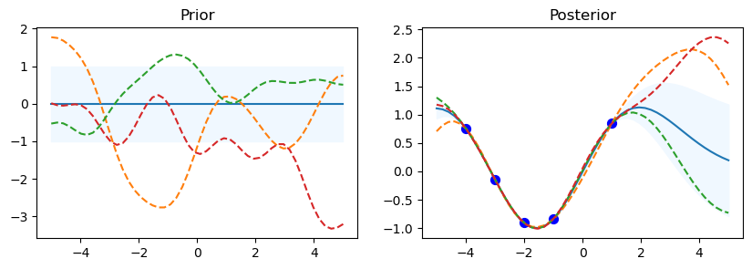
gp.kernel_ RBF(length_scale=1.93)
gp.log_marginal_likelihood: -3.444937833462115
--------------------------------------------------
/home/evaristizabalg/anaconda3/envs/ml/lib/python3.10/site-packages/sklearn/gaussian_process/kernels.py:452: ConvergenceWarning: The optimal value found for dimension 0 of parameter alpha is close to the specified upper bound 100000.0. Increasing the bound and calling fit again may find a better value.
warnings.warn(
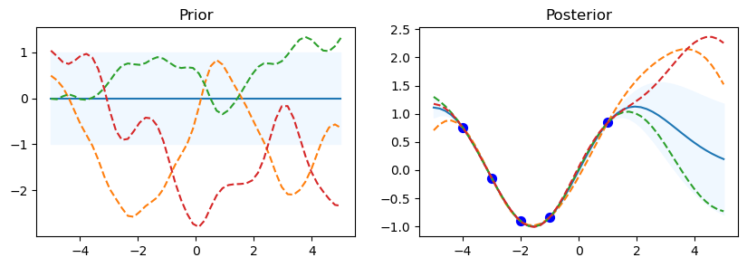
gp.kernel_ RationalQuadratic(alpha=1e+05, length_scale=1.93)
gp.log_marginal_likelihood: -3.4449718909150966
--------------------------------------------------
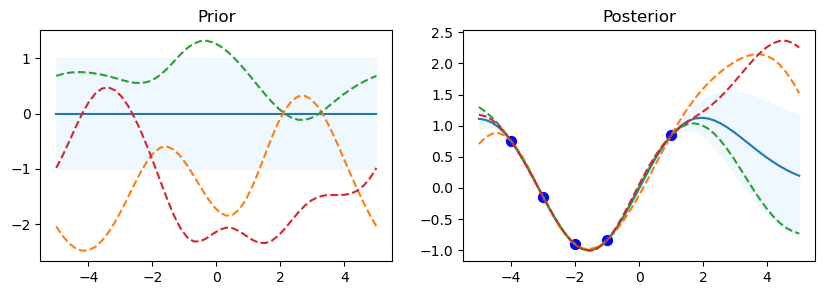
gp.kernel_ ExpSineSquared(length_scale=0.000524, periodicity=2.31e+04)
gp.log_marginal_likelihood: -3.444938145492622
--------------------------------------------------
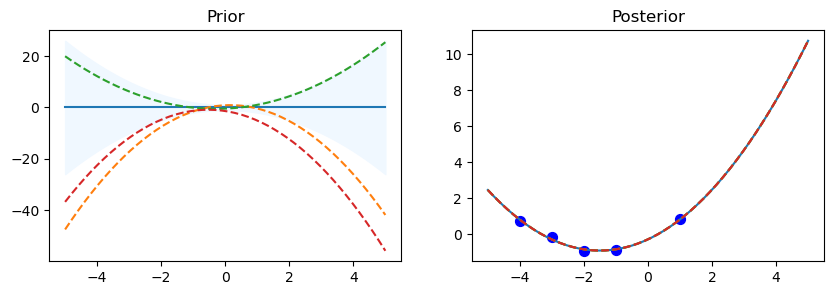
gp.kernel_ DotProduct(sigma_0=0.998) ** 2
gp.log_marginal_likelihood: -150204291.56018084
--------------------------------------------------
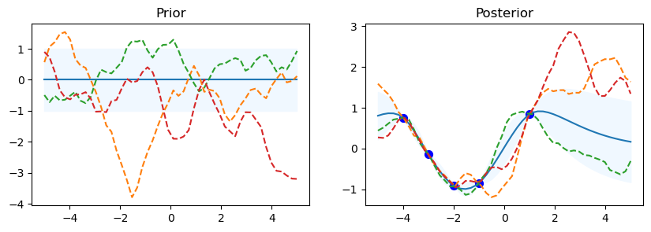
gp.kernel_ Matern(length_scale=1.99, nu=1.5)
gp.log_marginal_likelihood: -5.131637070524745
--------------------------------------------------
RBF & Linear#
Los GP estan determinados por la función de kernel utilizada y sus hiperparámetros. A continuación vamos a ver dos funciones que crean dos tipos de kernel comunmente utilizadas RBF y Lineal, y vamos a variar sus hiperparámetros para observar y comparar los cambios en la matriz de covarianza.
def cov_linear(x,x2=None,theta=1):
if x2 is None:
return np.dot(x, x.T)*theta
else:
return np.dot(x, x2.T)*theta
def cov_RBF(x, x2=None, theta=np.array([1,1])):
"""
Compute the Euclidean distance between each row of X and X2, or between
each pair of rows of X if X2 is None and feed it to the kernel.
"""
variance = theta[0]
lengthscale = theta[1]
if x2 is None:
xsq = np.sum(np.square(x),1)
r2 = -2.*np.dot(x,x.T) + (xsq[:,None] + xsq[None,:])
r = np.sqrt(r2)/lengthscale
else:
x1sq = np.sum(np.square(x),1)
x2sq = np.sum(np.square(x2),1)
r2 = -2.*np.dot(x, x2.T) + x1sq[:,None] + x2sq[None,:]
r = np.sqrt(r2)/lengthscale
return variance * np.exp(-0.5 * r**2)
X = np.sort(np.random.rand(400, 1) * 6 , axis=0)
params_linear = [0.01, 0.05, 1, 2, 4, 10]
params_rbf = [0.005, 0.1, 1, 2, 5, 12]
K = len(params_linear)
plt.figure(figsize=(25,25))
j=1
for i in range(K):
plt.subplot(K,2,j)
K_rbf = cov_RBF(X,X,theta=np.array([1,params_rbf[i]]))
plt.imshow(K_rbf)
plt.colorbar()
plt.gca().set_title('RBF (l=' + str(params_rbf[i]) + ')')
plt.subplot(K,2,j+1)
K_lin = cov_linear(X,X,theta=params_linear[i])
plt.imshow(K_lin)
plt.colorbar()
plt.gca().set_title('Lin (var=' + str(params_linear[i]) + ')')
j+=2
plt.suptitle('RBF (left) and Linear (right) cov. matrices created with different parameters', fontsize=14);
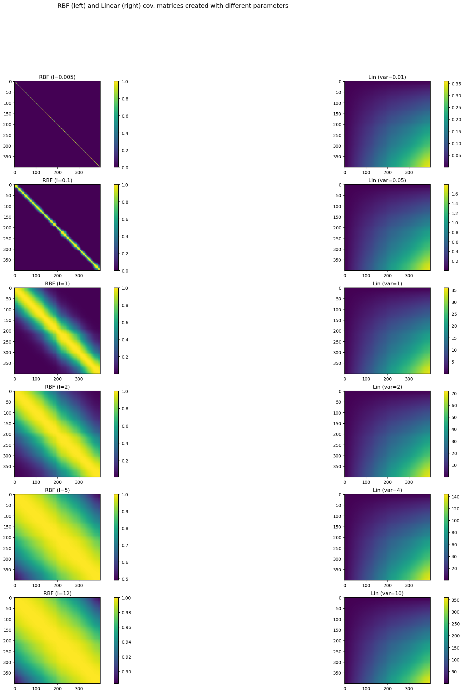
Ahora vamos a generar funciones, en este ejemplo 5, a partir de la matriz de covarianza con RBF y diferentes hiperparámetros.
plt.figure(figsize=(20,20))
num_samples=5
j=1
for i in range(K):
plt.subplot(K,2,j)
K_rbf = cov_RBF(X,X,theta=np.array([1,params_rbf[i]]))
plt.imshow(K_rbf)
plt.colorbar()
plt.gca().set_title('RBF Cov. Matrix (l=' + str(params_rbf[i]) + ')')
plt.subplot(K,2,j+1)
# Assume a GP with zero mean
mu=np.zeros((1,K_rbf.shape[0]))[0,:]
for s in range(num_samples):
# Jitter is a small noise addition to the diagonal to ensure positive definiteness
jitter = 1e-5*np.eye(K_rbf.shape[0])
sample = np.random.multivariate_normal(mean=mu, cov=K_rbf+jitter)
plt.plot(sample)
plt.gca().set_title('GP Samples from RBF (l=' + str(params_rbf[i]) + ')')
j+=2
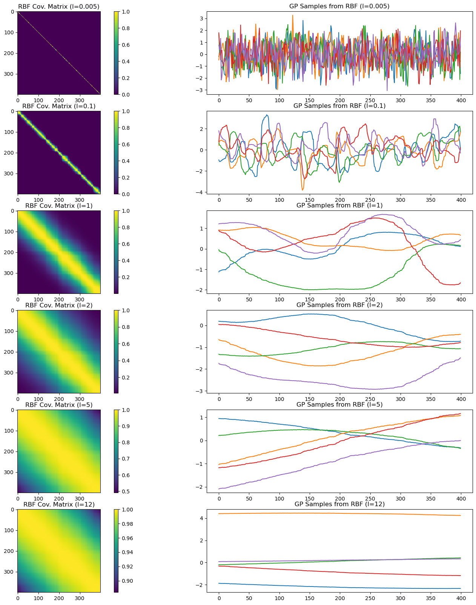
A continuación se presentan funciones de kernel de la librearía sklearn de 1 dimension (Q).
import GPy
Q=1
x_tmp = np.linspace(0,10,200)[:,None]
plt.figure(figsize=(40,40))
i=1
plt.subplot(6,2,i); i+=1
kern = GPy.kern.RBF(Q)
kern.plot(ax=plt.gca()); plt.gca().set_title('RBF', fontsize=30);
plt.subplot(6,2,i); i+=1
plt.imshow(kern.K(x_tmp)); plt.gca().set_title('Cov matrix:' + kern.name, fontsize=30)
plt.subplot(6,2,i); i+=1
kern = GPy.kern.Matern32(Q)
kern.plot(ax=plt.gca()); plt.gca().set_title('Matern 3/2', fontsize=30);
plt.subplot(6,2,i); i+=1
plt.imshow(kern.K(x_tmp)); plt.gca().set_title('Cov matrix:' + kern.name, fontsize=30)
plt.subplot(6,2,i); i+=1
kern = GPy.kern.PeriodicExponential(Q,period=np.pi/2)
kern.plot(ax=plt.gca()); plt.gca().set_title('Periodic', fontsize=30);
plt.subplot(6,2,i); i+=1
plt.imshow(kern.K(x_tmp)); plt.gca().set_title('Cov matrix:' + kern.name, fontsize=30)
plt.subplot(6,2,i); i+=1
kern = GPy.kern.Bias(Q)
kern.plot(ax=plt.gca()); plt.gca().set_title('Bias (constant)', fontsize=30);
plt.subplot(6,2,i); i+=1
plt.imshow(kern.K(x_tmp)); plt.gca().set_title('Cov matrix:' + kern.name, fontsize=30)
plt.subplot(6,2,i); i+=1
# We can even add kernels and get a new one...
kern = GPy.kern.RBF(Q) + GPy.kern.Linear(Q,variances=0.1)
kern.plot(ax=plt.gca()); plt.gca().set_title('RBF + linear', fontsize=30)
plt.subplot(6,2,i); i+=1
plt.imshow(kern.K(x_tmp)); plt.gca().set_title('Cov matrix:' + kern.name, fontsize=30)
plt.subplot(6,2,i); i+=1
# ...or even multiply them!
kern = GPy.kern.RBF(Q) * GPy.kern.PeriodicExponential(Q,period=np.pi/2)
kern.plot(ax=plt.gca()); plt.gca().set_title('RBF x Periodic', fontsize=30)
plt.subplot(6,2,i); i+=1
plt.imshow(kern.K(x_tmp)); plt.gca().set_title('Cov matrix:' + kern.name, fontsize=30)
plt.suptitle('Cov. function form (left) and Sample cov. matrix (right)', fontsize=40);
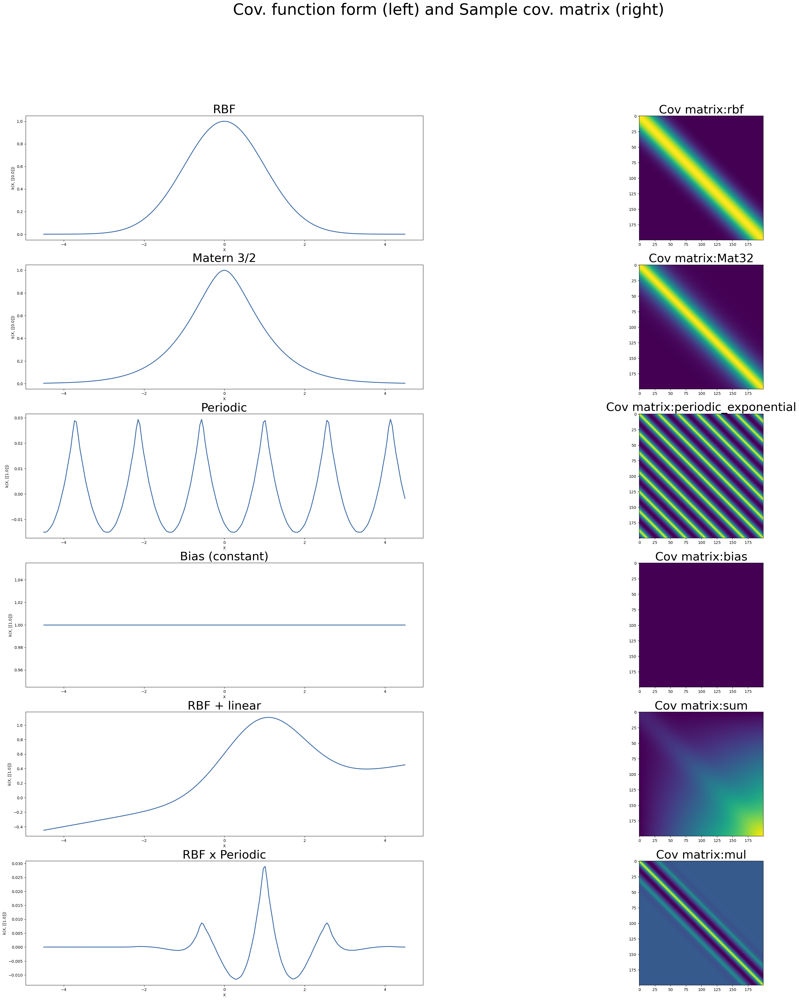
Ejemplo#
Hacemos el ejemplo de regresión entre -5 y 5. Los puntos de datos de observació) se generan a partir de una distribución uniforme entre -5 y 5. Esto significa que cualquier valor de punto dentro del intervalo dado [-5, 5] es igualmente probable de ser seleccionado por la distribución uniforme. Las funciones se evaluarán en n puntos espaciados uniformemente entre -5 y 5. Hacemos esto para mostrar una función continua para la regresión en nuestra región de interés [-5, 5]. Este es un ejemplo simple para realizar regresión GP. Asume un Prior GP con media cero. El código toma prestado en gran medida de la lectura de Dr. Nando de Freitas sobre procesos Gaussianos para regresión no lineal.
# This is the true unknown function we are trying to approximate
f = lambda x: np.sin(0.9*x).flatten()
#f = lambda x: (0.25*(x**2)).flatten()
x = np.arange(-5, 5, 0.1)
plt.figure(figsize=(8,4))
plt.plot(x, f(x))
plt.axis([-5, 5, -3, 3])
plt.show()
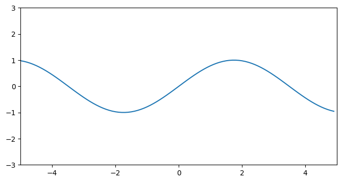
# Define the kernel
def kernel(a, b):
kernelParameter_l = 0.1
kernelParameter_sigma = 1.0
sqdist = np.sum(a**2,axis=1).reshape(-1,1) + np.sum(b**2,1) - 2*np.dot(a, b.T)
# np.sum( ,axis=1) means adding all elements columnly; .reshap(-1, 1) add one dimension to make (n,) become (n,1)
return kernelParameter_sigma*np.exp(-.5 * (1/kernelParameter_l) * sqdist)
# Sample some input points and noisy versions of the function evaluated at
# these points.
N = 20 # number of existing observation points (training points).
n = 200 # number of test points.
s = 0.00005 # noise variance.
X = np.random.uniform(-5, 5, size=(N,1)) # N training points
y = f(X) + s*np.random.randn(N)
K = kernel(X, X)
L = np.linalg.cholesky(K + s*np.eye(N)) # line 1
# points we're going to make predictions at.
Xtest = np.linspace(-5, 5, n).reshape(-1,1)
# compute the mean at our test points.
Lk = np.linalg.solve(L, kernel(X, Xtest)) # k_star = kernel(X, Xtest), calculating v := l\k_star
mu = np.dot(Lk.T, np.linalg.solve(L, y)) # \alpha = np.linalg.solve(L, y)
# compute the variance at our test points.
K_ = kernel(Xtest, Xtest) # k(x_star, x_star)
s2 = np.diag(K_) - np.sum(Lk**2, axis=0)
s = np.sqrt(s2)
# PLOTS:
plt.figure(figsize=(8,4))
plt.plot(X, y, 'k+', ms=18)
plt.plot(Xtest, f(Xtest), 'b-')
plt.gca().fill_between(Xtest.flat, mu-2*s, mu+2*s)
plt.plot(Xtest, mu, 'r--', lw=2)
plt.title('Mean predictions plus 2 st.deviations')
plt.show()
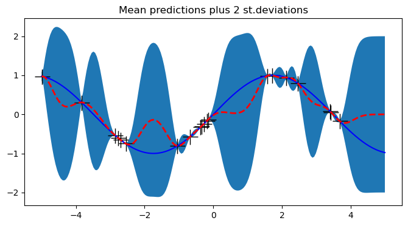
# draw samples from the posterior at our test points.
L = np.linalg.cholesky(K_ + 1e-6*np.eye(n) - np.dot(Lk.T, Lk))
f_post = mu.reshape(-1,1) + np.dot(L, np.random.normal(size=(n,40))) # size=(n, m), m shown how many posterior
plt.figure(3)
plt.clf()
plt.figure(figsize=(18,9))
plt.plot(X, y, 'k+', markersize=20, markeredgewidth=3)
plt.plot(Xtest, mu, 'r--', linewidth=3)
plt.plot(Xtest, f_post, linewidth=0.8)
plt.title('40 samples from the GP posterior, mean prediction function and observation points');
<Figure size 640x480 with 0 Axes>
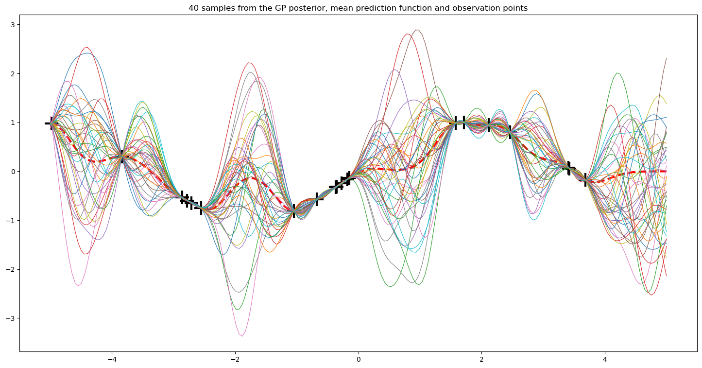
Hemos graficado m=40 muestras del posterior del Proceso Gaussiano junto con la función media para la predicción y los puntos de datos observados (conjunto de datos de entrenamiento). Es evidente que todas las funciones del posterior se colapsan en todos los puntos de observación.
Full GP implementación#
class CovFunctions(object):
"""
A wrapper for covariance functions which is compatible with the GP class.
"""
def __init__(self, covType, theta):
self.covType = covType
self.theta = theta
if covType == 'linear':
self.compute = self.linear
elif covType == 'RBF':
self.compute = self.RBF
def set_theta(self, theta):
self.theta = theta
def get_theta(self):
return self.theta
def linear(self, x,x2=None):
return cov_linear(x,x2,self.theta)
def RBF(self, x, x2=None):
return cov_RBF(x,x2,self.theta)
class GP(object):
def __init__(self, X, Y, sigma2, covType, theta):
self.X = X
self.Y = Y
self.N = self.X.shape[0]
self.sigma2 = sigma2
self.kern = CovFunctions(covType, theta)
self.K = self.kern.compute(X)
# Force computations
self.update_stats()
def get_params(self):
return np.hstack((self.sigma2, self.kern.get_theta()))
def set_params(self, params):
self.sigma2 = params[0]
self.kern.set_theta(params[1:])
def update_stats(self):
self.K = self.kern.compute(self.X)
self.Kinv = np.linalg.inv(self.K+self.sigma2*np.eye(self.N))
self.logdet = np.log(np.linalg.det(self.K+self.sigma2*np.eye(self.N)))
self.KinvY = np.dot(self.Kinv, self.Y)
# Equivalent to: np.trace(np.dot(self.Y, self.KinvY.T))
self.YKinvY = (self.Y*self.KinvY).sum()
def likelihood(self):
"""
That's actually the logarithm of equation (3)
Since logarithm is a convex function, maximum likelihood and maximum log likelihood wrt parameters
would yield the same solutuion, but logarithm is better to manage mathematically and
numerically.
"""
return -0.5*(self.N*np.log(2*np.pi) + self.logdet + self.YKinvY)
def posterior(self, x_star):
"""
Implements equation (4)
"""
self.update_stats()
K_starstar = self.kern.compute(x_star, x_star)
K_star = self.kern.compute(self.X, x_star)
KinvK_star = np.dot(self.Kinv, K_star)
mu_pred = np.dot(KinvK_star.T, self.Y)
K_pred = K_starstar - np.dot(KinvK_star.T, K_star)
return mu_pred, K_pred
def objective(self,params):
self.set_params(params)
self.update_stats()
return -self.likelihood()
def plot_fit(x,y,mu,var):
"""
Plot the fit of a GP
"""
plt.plot(x,y, 'k-o',label='true')
plt.plot(x,mu, 'b-<',label='predicted')
plt.plot(x, mu+2*np.sqrt(var), 'r--',label='var')
plt.plot(x, mu-2*np.sqrt(var), 'r--')
plt.legend()
Crearemos algunos datos de muestra en 1D a partir de un Proceso Gaussiano (GP) con covarianza RBF y una longitud de escala = 0.85. A continuación, normalizamos los datos y reservamos algunos para pruebas. Luego, graficamos los datos.
N=22 # number of training points
Nstar = 70 # number of test points
# create toy data
X = np.sort(np.random.rand(N+Nstar, 1) * 6 , axis=0)
K_rbf = cov_RBF(X,X,theta=np.array([1,0.85]))
mu=np.zeros((1,K_rbf.shape[0]))[0,:]
jitter = 1e-5*np.eye(K_rbf.shape[0])
Y = np.random.multivariate_normal(mean=mu, cov=K_rbf+jitter)[:,None]
#Y = np.sin(X*2) + np.random.randn(*X.shape) * 0.008
# split data into training and test set
perm = np.random.permutation(X.shape[0])
Xtr = X[np.sort(perm[0:N],axis=0),:]
Ytr = Y[np.sort(perm[0:N],axis=0),]
X_star = X[np.sort(perm[N:N+Nstar],axis=0),:]
Y_star = Y[np.sort(perm[N:N+Nstar],axis=0),:]
# Normalize data to be 0 mean and 1 std
Ymean = Ytr.mean()
Ystd = Ytr.std()
Ytr-=Ymean
Ytr/=Ystd
Y_star -= Ymean
Y_star /= Ystd
# plot data
plt.plot(X,(Y-Ymean)/Ystd, 'k-')
plt.plot(Xtr,Ytr, 'b<',label='training')
plt.plot(X_star,Y_star, 'ro',label='test')
plt.legend();
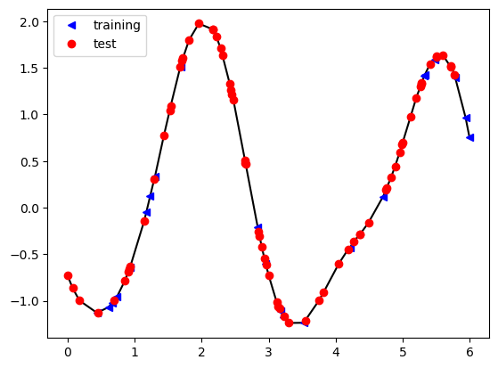
Ahora definiremos dos modelos de Proceso Gaussiano (GP), uno con una función de covarianza lineal y otro con una función de covarianza RBF. Los utilizaremos para predecir los datos de entrenamiento y de prueba.
# Define GP models with initial parameters
g_lin = GP(Xtr, Ytr, 0.1, 'linear', 2)
g_rbf = GP(Xtr, Ytr, 0.1, 'RBF', np.array([1,2]))
# Get the posterior of the two GPs on the *training* data
mu_lin_tr,var_lin_tr = g_lin.posterior(Xtr)
mu_rbf_tr,var_rbf_tr = g_rbf.posterior(Xtr)
# Get the posterior of the two GPs on the *test* data
mu_lin_star,var_lin_star = g_lin.posterior(X_star)
mu_rbf_star,var_rbf_star = g_rbf.posterior(X_star)
# Plot the fit of the two GPs on the training and test data
ax=plt.subplot(2, 2, 1); ax.set_aspect('auto')
plot_fit(Xtr, Ytr, mu_lin_tr, np.diag(var_lin_tr)[:,None])
plt.gca().set_title('Linear, training')
ax=plt.subplot(2, 2, 2); ax.set_aspect('auto')
plot_fit(X_star, Y_star, mu_lin_star, np.diag(var_lin_star)[:,None])
plt.gca().set_title('Linear, test')
ax=plt.subplot(2, 2, 3); ax.set_aspect('auto')
plot_fit(Xtr, Ytr, mu_rbf_tr, np.diag(var_rbf_tr)[:,None])
plt.gca().set_title('RBF (l=' + str(g_rbf.kern.get_theta()[1]) + '), training')
ax=plt.subplot(2, 2, 4); ax.set_aspect('auto')
plot_fit(X_star, Y_star, mu_rbf_star, np.diag(var_rbf_star)[:,None])
plt.gca().set_title('RBF, test');
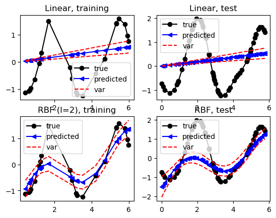
Recuerda que el valor verdadero que genera los datos es 0.85, pero esperaríamos encontrarlo como el mejor solo si tuviéramos datos infinitos. De lo contrario, también se espera encontrar un valor cercano.
En el siguiente gráfico mostramos el ajuste para cada longitud de escala y la verosimilitud lograda por cada una.
import matplotlib.mlab as mlab
from scipy.stats import multivariate_normal
import seaborn as sns
from sklearn.metrics import mean_squared_error as mse
from scipy.stats import normaltest
from sklearn.datasets import make_friedman2
from sklearn.gaussian_process.kernels import DotProduct, WhiteKernel
from sklearn.gaussian_process.kernels import RBF, ConstantKernel as C
import random
import sklearn
from matplotlib.pyplot import figure
f=figure(figsize=(20,28))
i = 1
# Following array holds different lengthscales to test one by one
test_l=[0.008, 0.05, 0.2, 0.85, 1.5, 2, 6, 12]
for l in test_l:
g_rbf = GP(Xtr, Ytr, 0.1, 'RBF', np.array([1,l]))
mu_rbf_tr,var_rbf_tr = g_rbf.posterior(Xtr)
mu_rbf_star,var_rbf_star = g_rbf.posterior(X_star)
ax=plt.subplot(len(test_l), 2,i); ax.set_aspect('auto')
plot_fit(Xtr, Ytr, mu_rbf_tr, np.diag(var_rbf_tr)[:,None])
ll = g_rbf.likelihood()
plt.gca().set_title('RBF (l=' + str(g_rbf.kern.get_theta()[1]) + '), training. L=' + str(ll) )
ax=plt.subplot(len(test_l), 2, i+1); ax.set_aspect('auto')
plot_fit(X_star, Y_star, mu_rbf_star, np.diag(var_rbf_star)[:,None])
ll = g_rbf.likelihood()
plt.gca().set_title('RBF (l=' + str(g_rbf.kern.get_theta()[1]) + '), test. L=' + str(ll) )
i+=2;
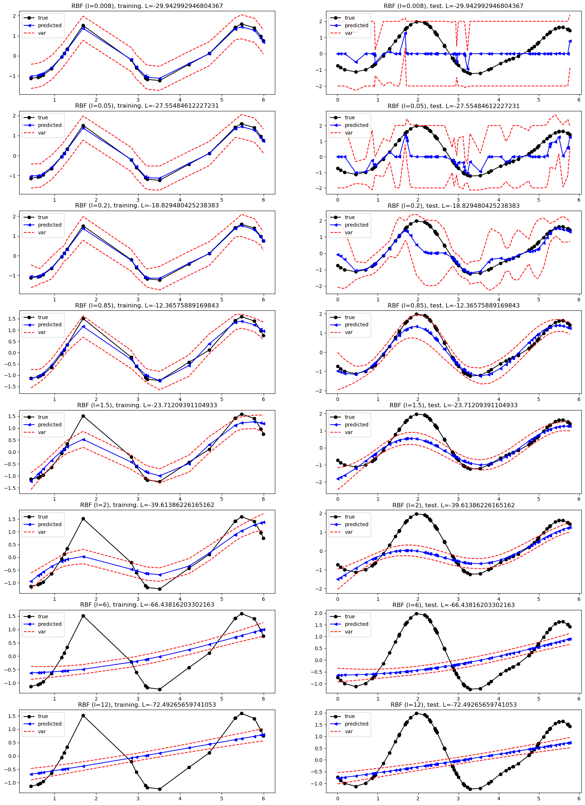
Vemos que las longitudes de escala muy cortas generan funciones más “onduladas”, que son capaces de interpolar perfectamente entre los puntos de entrenamiento. Sin embargo, un modelo sobreajustado de este tipo tiende a estar más “sorprendido” por cualquier cosa que no sea exactamente los mismos datos de entrenamiento… por lo tanto, tiene un mal desempeño en el conjunto de prueba.
Por otro lado, las longitudes de escala grandes generan funciones muy planas, que en el límite se parecen a una función lineal y subajustan los datos.
Entonces, ¿cómo encontramos automáticamente la longitud de escala correcta?
El enfoque más adecuado para seleccionar el parámetro correcto no es una verificación visual ni probar el error en los datos de entrenamiento/conjunto de validación. En cambio, queremos observar la verosimilitud, que nos indica cuál es la probabilidad de que el modelo específico (con longitud de escala l) haya generado los datos.
Para mostrar esto, probaremos nuevamente diferentes configuraciones para la longitud de escala del GP-RBF, pero esta vez haremos un seguimiento de la verosimilitud y también del error de entrenamiento/prueba.
Primero, crea algunas funciones auxiliares:
# Root mean squared error
def rmse(pred, truth):
pred = pred.flatten()
truth = truth.flatten()
return np.sqrt(np.mean((pred-truth)**2))
# Make data 0 mean and 1 std.
def standardize(x):
return (x-x.mean())/x.std()
test_l=np.linspace(0.01,5, 100)
ll = []
err_tr = []
err_test = []
for l in test_l:
g_rbf = GP(Xtr, Ytr, 0.1, 'RBF', np.array([1,l]))
g_rbf.update_stats()
ll.append(g_rbf.likelihood())
mu_rbf_tr,var_rbf_tr = g_rbf.posterior(Xtr)
err_tr.append(rmse(mu_rbf_tr, Ytr))
mu_rbf_star,var_rbf_star = g_rbf.posterior(X_star)
err_test.append(rmse(mu_rbf_star, Y_star))
ll = standardize(np.array(ll))
err_tr = standardize(np.array(err_tr))
err_test = standardize(np.array(err_test))
max_ll, argmax_ll = np.max(ll), np.argmax(ll)
min_err_tr, argmin_err_tr = np.min(err_tr), np.argmin(err_tr)
min_err_test, argmin_err_test = np.min(err_test), np.argmin(err_test)
plt.plot(test_l, ll,label='likelihood')
plt.plot(test_l, err_tr,label='err_tr')
plt.plot(test_l, err_test,label='err_test')
tmp_x = np.ones(test_l.shape[0])
ylim=plt.gca().get_ylim()
tmp_y = np.linspace(ylim[0],ylim[1], tmp_x.shape[0])
plt.plot(tmp_x*test_l[argmax_ll], tmp_y,'--', label='maxL')
plt.plot(tmp_x*test_l[argmin_err_tr], tmp_y,'--', label='minErrTr')
plt.plot(tmp_x*test_l[argmin_err_test], tmp_y,'--', label='minErrTest')
plt.legend()
print(f"Best lengthscale according to likelihood {str(test_l[argmax_ll])}")
print(f"Best lengthscale according to training error: {str(test_l[argmin_err_tr])}")
print(f"Best lengthscale according to test error : {str(test_l[argmin_err_test])}")
Best lengthscale according to likelihood 0.6652525252525253
Best lengthscale according to training error: 0.26202020202020204
Best lengthscale according to test error : 0.614848484848485
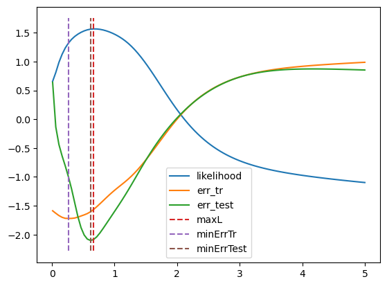
El hecho de que la mejor longitud de escala (según la verosimilitud) no sea necesariamente la que nos da el menor error de entrenamiento es una buena propiedad, es decir, el modelo evita el sobreajuste.
La longitud de escala elegida también está bastante cerca de la longitud verdadera. Realizar el experimento con más datos revelará una coincidencia aún más cercana (ten en cuenta que los problemas numéricos debido a la codificación simple aquí podrían causar problemas en los cálculos).
Para optimizar correctamente el kernel, queremos evitar una búsqueda exhaustiva del parámetro correcto, especialmente dado que también hay otros parámetros que antes consideramos fijos.
La forma de optimizar el Proceso Gaussiano (GP) según la máxima verosimilitud es utilizando la información del gradiente. Luego, al proporcionar las funciones de los gradientes y la función del objetivo (ya implementada en GP.objective) a un optimizador de gradiente, obtendrás automáticamente el resultado. Consulta la función optimize de SciPy.
Para ahorrar algo de tiempo y esfuerzo, demostraremos la optimización con GPy [SheffieldML/GPy], un paquete de software de GP escrito en Python.
Q = Xtr.shape[1]
k = GPy.kern.RBF(Q)
m = GPy.models.GPRegression(X=Xtr, Y=Ytr, kernel=k)
print (m)
m.plot()
Name : GP regression
Objective : 27.757946074726643
Number of Parameters : 3
Number of Optimization Parameters : 3
Updates : True
Parameters:
GP_regression. | value | constraints | priors
rbf.variance | 1.0 | +ve |
rbf.lengthscale | 1.0 | +ve |
Gaussian_noise.variance | 1.0 | +ve |
{'dataplot': [<matplotlib.collections.PathCollection at 0x73675d16c760>],
'gpmean': [[<matplotlib.lines.Line2D at 0x73675d16ceb0>]],
'gpconfidence': [<matplotlib.collections.FillBetweenPolyCollection at 0x73675d16ce50>]}
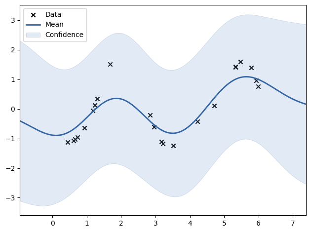
Optimiza utilizando el método del gradiente. Observa cómo la longitud de escala optimizada está cerca de la que encontramos antes mediante búsqueda en rejilla y aún más cerca de la verdadera.
m.optimize(messages=1)
Running L-BFGS-B (Scipy implementation) Code:
runtime i f |g|
00s01 0002 2.255556e+01 3.140543e+01
00s09 0008 8.737759e+06 3.466496e+13
00s11 0015 -2.588187e+01 6.947934e+00
00s13 0023 -2.607996e+01 4.208194e-11
Runtime: 00s13
Optimization status: Converged
<paramz.optimization.optimization.opt_lbfgsb at 0x73675d1a5930>
print(m)
m.plot()
Name : GP regression
Objective : -26.07996205909806
Number of Parameters : 3
Number of Optimization Parameters : 3
Updates : True
Parameters:
GP_regression. | value | constraints | priors
rbf.variance | 3.3643776903467857 | +ve |
rbf.lengthscale | 0.8702751546025165 | +ve |
Gaussian_noise.variance | 2.8520515842175454e-05 | +ve |
{'dataplot': [<matplotlib.collections.PathCollection at 0x73675cdc29b0>],
'gpmean': [[<matplotlib.lines.Line2D at 0x73675cdc3100>]],
'gpconfidence': [<matplotlib.collections.FillBetweenPolyCollection at 0x73675cdc30a0>]}
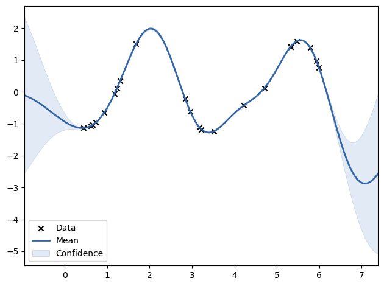
Predecir nuevos datos
mu,var = m.predict(X_star)
plot_fit(X_star, Y_star, mu, var)
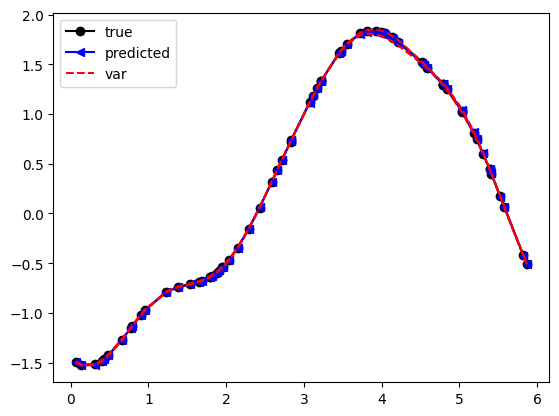
Ejemplo#
# Generate sample data
np.random.seed(0)
X = np.sort(5 * np.random.rand(80, 1), axis=0)
y = np.sin(X).ravel()
# Add noise to the data
y += 0.1 * np.random.randn(80)
# Define the kernel (RBF kernel)
kernel = 1.0 * kernels.RBF(length_scale=1.0)
# Create a Gaussian Process Regressor with the defined kernel
gp = GaussianProcessRegressor(kernel=kernel, n_restarts_optimizer=10)
# Split the data into training and testing sets
from sklearn.model_selection import train_test_split
X_train, X_test, y_train, y_test = train_test_split(
X, y, test_size=0.5, random_state=0)
# Fit the Gaussian Process model to the training data
gp.fit(X_train, y_train)
# Make predictions on the test data
y_pred, sigma = gp.predict(X_test, return_std=True)
# Visualize the results
x = np.linspace(0, 5, 1000)[:, np.newaxis]
y_mean, y_cov = gp.predict(x, return_cov=True)
plt.figure(figsize=(10, 5))
plt.scatter(X_train, y_train, c='r', label='Training Data')
plt.plot(x, y_mean, 'k', lw=2, zorder=9, label='Predicted Mean')
plt.fill_between(x[:, 0], y_mean - 1.96 * np.sqrt(np.diag(y_cov)), y_mean + 1.96 *
np.sqrt(np.diag(y_cov)), alpha=0.2, color='k', label='95% Confidence Interval')
plt.xlabel('X')
plt.ylabel('y')
plt.legend()
plt.show()
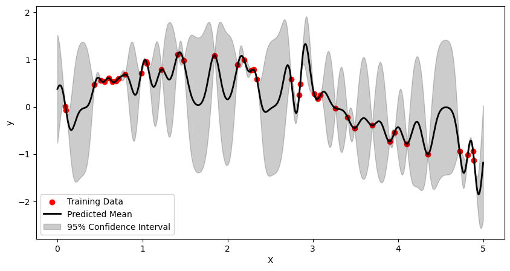
Ejemplo#
X = np.linspace(start=0, stop=10, num=1_000).reshape(-1, 1)
y = np.squeeze(X * np.sin(X))
plt.plot(X, y, label=r"$f(x) = x \sin(x)$", linestyle="dotted")
plt.legend()
plt.xlabel("$x$")
plt.ylabel("$f(x)$")
_ = plt.title("True generative process")
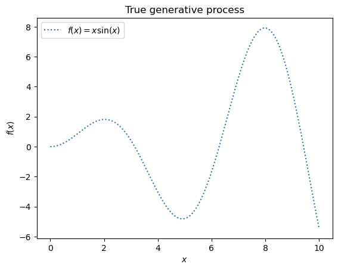
Example with noise-free target¶#
rng = np.random.RandomState(1)
training_indices = rng.choice(np.arange(y.size), size=6, replace=False)
X_train, y_train = X[training_indices], y[training_indices]
kernel = 1 * kernels.RBF(length_scale=1.0, length_scale_bounds=(1e-2, 1e2))
gaussian_process = GaussianProcessRegressor(kernel=kernel, n_restarts_optimizer=9)
gaussian_process.fit(X_train, y_train)
gaussian_process.kernel_
5.02**2 * RBF(length_scale=1.43)
mean_prediction, std_prediction = gaussian_process.predict(X, return_std=True)
plt.plot(X, y, label=r"$f(x) = x \sin(x)$", linestyle="dotted")
plt.scatter(X_train, y_train, label="Observations")
plt.plot(X, mean_prediction, label="Mean prediction")
plt.fill_between(
X.ravel(),
mean_prediction - 1.96 * std_prediction,
mean_prediction + 1.96 * std_prediction,
alpha=0.5,
label=r"95% confidence interval",
)
plt.legend()
plt.xlabel("$x$")
plt.ylabel("$f(x)$")
_ = plt.title("Gaussian process regression on noise-free dataset")
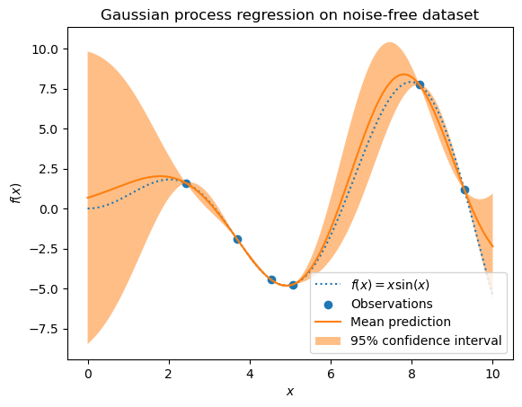
Example with noisy targets¶#
noise_std = 0.75
y_train_noisy = y_train + rng.normal(loc=0.0, scale=noise_std, size=y_train.shape)
gaussian_process = GaussianProcessRegressor(kernel=kernel, alpha=noise_std**2, n_restarts_optimizer=9)
gaussian_process.fit(X_train, y_train_noisy)
mean_prediction, std_prediction = gaussian_process.predict(X, return_std=True)
plt.plot(X, y, label=r"$f(x) = x \sin(x)$", linestyle="dotted")
plt.errorbar(
X_train,
y_train_noisy,
noise_std,
linestyle="None",
color="tab:blue",
marker=".",
markersize=10,
label="Observations",
)
plt.plot(X, mean_prediction, label="Mean prediction")
plt.fill_between(
X.ravel(),
mean_prediction - 1.96 * std_prediction,
mean_prediction + 1.96 * std_prediction,
color="tab:orange",
alpha=0.5,
label=r"95% confidence interval",
)
plt.legend()
plt.xlabel("$x$")
plt.ylabel("$f(x)$")
_ = plt.title("Gaussian process regression on a noisy dataset")
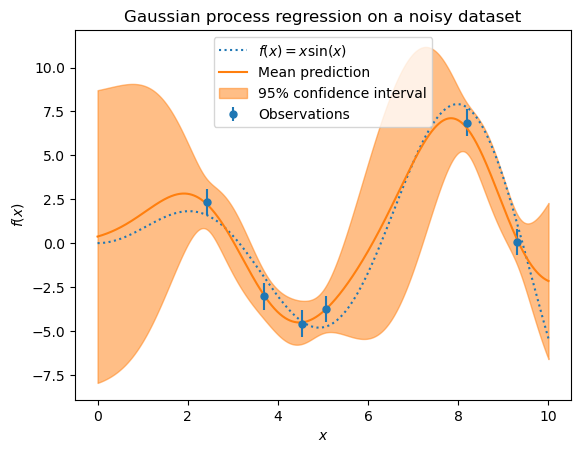
Ejemplo con dos covariables#
Paso |
Descripción breve |
|---|---|
Datos |
Creamos 80 puntos \((x_1,x_2)\) aleatorios en \([0,1]^2\) y calculamos \(y = \sin(4x_1)+\cos(4x_2)+\varepsilon\). |
Kernel |
|
Ajuste |
|
Predicción |
Evaluamos la media \(\mu_\ast\) y la desviación estándar \(\sigma_\ast\) en una malla 40 × 40 para visualizar la superficie posterior. |
Gráfica |
La malla azulada representa \(\mu_\ast(x_1,x_2)\); los puntos indican los datos. En tres dimensiones percibes cómo el GP interpola y suaviza los valores observados. |
# 2. Datos sintéticos ---------------------------------------------------------
rng = np.random.RandomState(42)
n = 80 # número de observaciones
X = rng.uniform(0, 1, (n, 2)) # dos covariables: x1, x2 ∈ [0,1]
def f_true(x):
"""Función 'real' (desconocida) que queremos aprender."""
return np.sin(4 * x[:, 0]) + np.cos(4 * x[:, 1])
y = f_true(X) + 0.1 * rng.randn(n) # añadimos ruido gaussiano ε ~ N(0, 0.1²)
# 3. Definición del kernel -----------------------------------------------------
kernel = kernels.RBF(length_scale=[0.2, 0.2], length_scale_bounds=(1e-2, 1e1))
gp = GaussianProcessRegressor(kernel=kernel, n_restarts_optimizer=10)
gp.fit(X, y)
GaussianProcessRegressor(kernel=RBF(length_scale=[0.2, 0.2]),
n_restarts_optimizer=10)In a Jupyter environment, please rerun this cell to show the HTML representation or trust the notebook. On GitHub, the HTML representation is unable to render, please try loading this page with nbviewer.org.
GaussianProcessRegressor(kernel=RBF(length_scale=[0.2, 0.2]),
n_restarts_optimizer=10)# 5. Malla de predicción -------------------------------------------------------
xx = np.linspace(0, 1, 40)
yy = np.linspace(0, 1, 40)
Xg1, Xg2 = np.meshgrid(xx, yy)
X_grid = np.column_stack([Xg1.ravel(), Xg2.ravel()])
y_mean, y_std = gp.predict(X_grid, return_std=True)
y_mean = y_mean.reshape(Xg1.shape)
y_std = y_std.reshape(Xg1.shape)
# 6. Visualización -------------------------------------------------------------
from mpl_toolkits.mplot3d import Axes3D # noqa: F401 (import necesario)
fig = plt.figure(figsize=(10, 6))
ax = fig.add_subplot(111, projection='3d')
# Superficie de la media posterior
ax.plot_surface(Xg1, Xg2, y_mean, alpha=0.8)
# Puntos observados
ax.scatter(X[:, 0], X[:, 1], y, s=30, color='red',edgecolor='k')
ax.set_xlabel(r'$x_1$')
ax.set_ylabel(r'$x_2$')
ax.set_zlabel(r'$y$')
ax.set_title('Proceso Gaussiano con dos covariables')
plt.tight_layout()
plt.show()
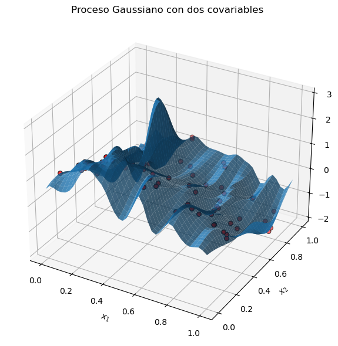
Conexión entre Procesos Gaussianos y Kriging#
Los Procesos Gaussianos y el Kriging geoestadístico son, matemáticamente, el mismo modelo expresado con vocabulario distinto. Esta equivalencia no es una coincidencia: el Kriging Ordinario fue desarrollado de forma independiente en la geoestadística (Matheron 1963, Krige 1951) antes de que la teoría de GPs fuera formalizada en el aprendizaje automático (Rasmussen & Williams 2006). Reconocer esta conexión permite transferir intuiciones y herramientas entre ambas disciplinas.
Diccionario de equivalencias#
Concepto en GP |
Concepto en Kriging |
Descripción |
|---|---|---|
Kernel \(k(\mathbf{x}, \mathbf{x}')\) |
Variograma \(\gamma(\mathbf{h})\) |
Función que mide la similitud/diferencia entre dos ubicaciones según su distancia \(\mathbf{h} = \mathbf{x} - \mathbf{x}'\) |
Función de covarianza \(C(\mathbf{h}) = k(\mathbf{x}, \mathbf{x}')\) |
Covariograma \(C(\mathbf{h}) = \sigma^2 - \gamma(\mathbf{h})\) |
Relación: \(C(\mathbf{h}) = \sigma^2 - \gamma(\mathbf{h})\) |
Length-scale \(l\) |
Rango (range) \(a\) |
Distancia a la cual la correlación cae a ~0 |
Varianza de señal \(\sigma^2\) |
Sill \(\sigma^2\) |
Varianza total del proceso |
Varianza de ruido \(\sigma_n^2\) |
Nugget \(\tau^2\) |
Variabilidad a distancia cero (error de medición + microescala) |
Media posterior \(\mu^*\) |
Predicción Kriging \(\hat{z}(\mathbf{x}^*)\) |
Valor esperado en ubicaciones no observadas |
Varianza posterior \(\sigma^{*2}\) |
Varianza Kriging \(\sigma_K^2(\mathbf{x}^*)\) |
Incertidumbre de la predicción |
Relación algebraica#
Dado un conjunto de \(n\) observaciones \(\mathbf{y} = [y_1, \ldots, y_n]^T\) en ubicaciones \(\mathbf{X} = [\mathbf{x}_1, \ldots, \mathbf{x}_n]^T\), la predicción en un nuevo punto \(\mathbf{x}^*\) es idéntica en ambos formalismos:
donde \(K_{ij} = k(\mathbf{x}_i, \mathbf{x}_j)\) es la matriz de covarianza entre puntos de entrenamiento y \(\mathbf{k}_* = [k(\mathbf{x}_1, \mathbf{x}^*), \ldots, k(\mathbf{x}_n, \mathbf{x}^*)]^T\) es el vector de covarianzas entre los datos y el punto de predicción.
El Kriging Ordinario añade la restricción de insesgadez (\(\sum_i \lambda_i = 1\)) mediante un multiplicador de Lagrange, equivalente a usar una media constante desconocida en el GP (lo que se llama Kriging Ordinario en geoestadística o GP con media constante desconocida).
Correspondencia entre kernels y modelos de variograma#
Los modelos de variograma geoestadísticos clásicos tienen su equivalente exacto en kernels de GP:
Modelo de variograma |
Kernel GP equivalente |
Propiedad |
|---|---|---|
Esférico |
Aproximado por Matérn \(\nu = 1.5\) |
Funciones una vez diferenciables |
Exponencial |
Matérn \(\nu = 0.5\) (Ornstein-Uhlenbeck) |
Funciones continuas pero no diferenciables |
Gaussiano |
RBF (Squared Exponential) |
Funciones infinitamente diferenciables |
Matérn \(\nu = 2.5\) |
Matérn \(\nu = 2.5\) |
Funciones dos veces diferenciables |
Nota práctica: El kernel RBF (equivalente al variograma Gaussiano) produce predicciones muy suaves que a menudo son demasiado suaves para fenómenos geofísicos reales. Los kernels Matérn (especialmente \(\nu = 1.5\) o \(\nu = 2.5\)) son generalmente más realistas para variables como precipitación, elevación o concentración de contaminantes.
¿Por qué usar GPs en lugar de Kriging?#
La ventaja del framework GP sobre el Kriging clásico radica en:
Estimación conjunta de hiperparámetros: El GP optimiza el length-scale \(l\), la varianza \(\sigma^2\) y el nugget \(\sigma_n^2\) simultáneamente maximizando la verosimilitud marginal logarítmica (log marginal likelihood), sin necesidad de ajustar el variograma experimental de forma visual.
Incertidumbre calibrada: La varianza posterior del GP es una medida probabilística rigurosa de la incertidumbre, directamente interpretable como un intervalo de credibilidad bayesiano.
Extensibilidad: Los kernels se pueden combinar (suma, producto) para capturar estructuras más complejas (periodicidad, tendencias, múltiples escalas), lo que en Kriging requeriría modelos de variograma no estándar.
Integración con modelos de aprendizaje automático: Los GPs se pueden combinar con redes neuronales profundas (Deep Kernel Learning) o usarse como capa de incertidumbre en modelos bayesianos complejos.
Demostración de equivalencia#
El siguiente fragmento compara la predicción de un GP con kernel exponencial cuadrado y un Kriging Ordinario con variograma Gaussiano para los mismos datos:
import numpy as np
from sklearn.gaussian_process import GaussianProcessRegressor
from sklearn.gaussian_process.kernels import RBF, WhiteKernel
from pykrige.ok import OrdinaryKriging
# Datos de entrenamiento: 20 puntos en 1D
np.random.seed(42)
X_train = np.sort(np.random.uniform(0, 10, 20))
y_train = np.sin(X_train) + np.random.normal(0, 0.1, 20)
X_pred = np.linspace(0, 10, 200)
# --- GP con kernel RBF (equivalente al variograma Gaussiano) ---
kernel = RBF(length_scale=1.0) + WhiteKernel(noise_level=0.01)
gp = GaussianProcessRegressor(kernel=kernel, n_restarts_optimizer=10)
gp.fit(X_train.reshape(-1, 1), y_train)
mu_gp, std_gp = gp.predict(X_pred.reshape(-1, 1), return_std=True)
# --- Kriging Ordinario con variograma Gaussiano ---
ok = OrdinaryKriging(X_train, np.zeros_like(X_train), y_train,
variogram_model='gaussian')
mu_kr, var_kr = ok.execute('grid', X_pred, np.array([0.0]))
mu_kr = mu_kr.squeeze()
# Las predicciones mu_gp y mu_kr deben ser casi idénticas
print(f"Max diferencia GP vs Kriging: {np.max(np.abs(mu_gp - mu_kr)):.6f}")
Si la diferencia máxima es menor que 1e-3, la equivalencia queda demostrada empíricamente. Las pequeñas diferencias se deben a la estimación de hiperparámetros: el GP los optimiza automáticamente, mientras que el Kriging requiere ajuste manual del variograma.
Actividades#
Efecto del kernel: Implementa un Proceso Gaussiano con tres kernels distintos: (a) RBF (Radial Basis Function), (b) kernel exponencial, y (c) kernel Matérn (ν=1.5). Para los mismos datos de entrenamiento, grafica las predicciones y los intervalos de credibilidad al 95% de cada modelo. ¿Cómo difiere la suavidad de las predicciones entre kernels?
Relación GP-Kriging: El Kriging Ordinario puede verse como un caso especial de GP con un kernel determinado. Demuestra empíricamente esta equivalencia: ajusta un GP con kernel exponencial cuadrado y un Kriging Ordinario con variograma Gaussiano al mismo dataset de 20 puntos. Grafica las predicciones de ambos y verifica que son (aproximadamente) iguales.
Hiperparámetros del kernel: Para el kernel RBF (\(k(x, x') = \sigma^2 e^{-\|x-x'\|^2 / 2l^2}\)), varía el length-scale \(l\) entre 0.1, 1 y 10. Para cada valor, grafica muestras del proceso previo (prior samples). ¿Cómo afecta \(l\) a la suavidad espacial y a la longitud de correlación del proceso?
GP con ruido: Implementa un GP con término de ruido (\(\sigma_n^2\)) para un conjunto de 30 puntos con observaciones ruidosas. Varía \(\sigma_n^2\) entre 0.01, 0.1 y 1.0. ¿Cómo cambia el comportamiento del modelo al pasar por los puntos de entrenamiento versus suavizarlos?
Recursos adicionales#
Documentación oficial#
Lecturas recomendadas#
Rasmussen, C. E. & Williams, C. K. I. (2006). Gaussian Processes for Machine Learning. MIT Press. Disponible online
Cressie, N. & Wikle, C. K. (2011). Statistics for Spatio-Temporal Data. Wiley.
Banerjee, S., Carlin, B. P., & Gelfand, A. E. (2015). Hierarchical Modeling and Analysis for Spatial Data (2nd ed.). CRC Press.
Stein, M. L. (1999). Interpolation of Spatial Data: Some Theory for Kriging. Springer.